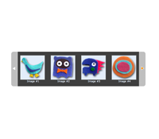
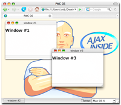

- Featured Virtual Tours
Here are several Virtual Tours of our Featured Lake Homes. Last Update: 14 day(s) ago - Welcome
� Where do you find the best Lake Homes? � We have High-Definition Virtual Tours for every single property that we feature. That means you can get inspired by the floorplan; see the detail in the home's craftsmanship; or preview the waterfront v ... Read More Last Update: 18 hour(s) ago


Display anything in a carousel (3)
Display anything in a carousel (3)

Windows and Dialogs (4)
Windows and Dialogs (4)
Display anything in a carousel (5)
Windows and Dialogs (6)